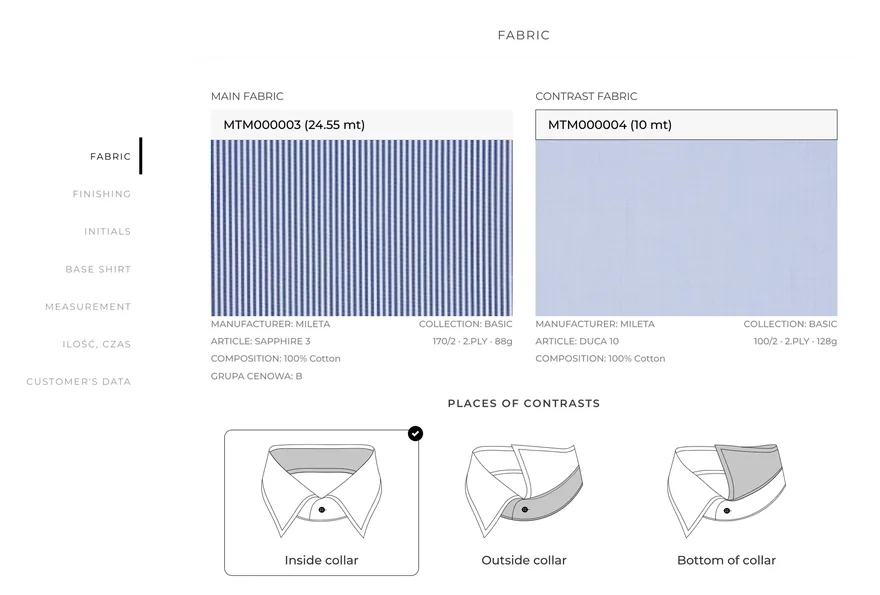

Prawdziwe wdrożenie
TailorCloth
Strona na Odoo i własne moduły do zarządzania produktami. Bezpieczna platforma dla zaufanych użytkowników, faktury krajowe i zagraniczne, zautomatyzowane procesy magazynowe. Do tego zamawianie bez cen, pod indywidualne oferty.
Zrobione z zespołem, który prowadziłem w Media Hunters. Dziś stronę utrzymuje inna agencja.
Odoo, Python, JavaScript, PostgreSQL
tailorcloth.com